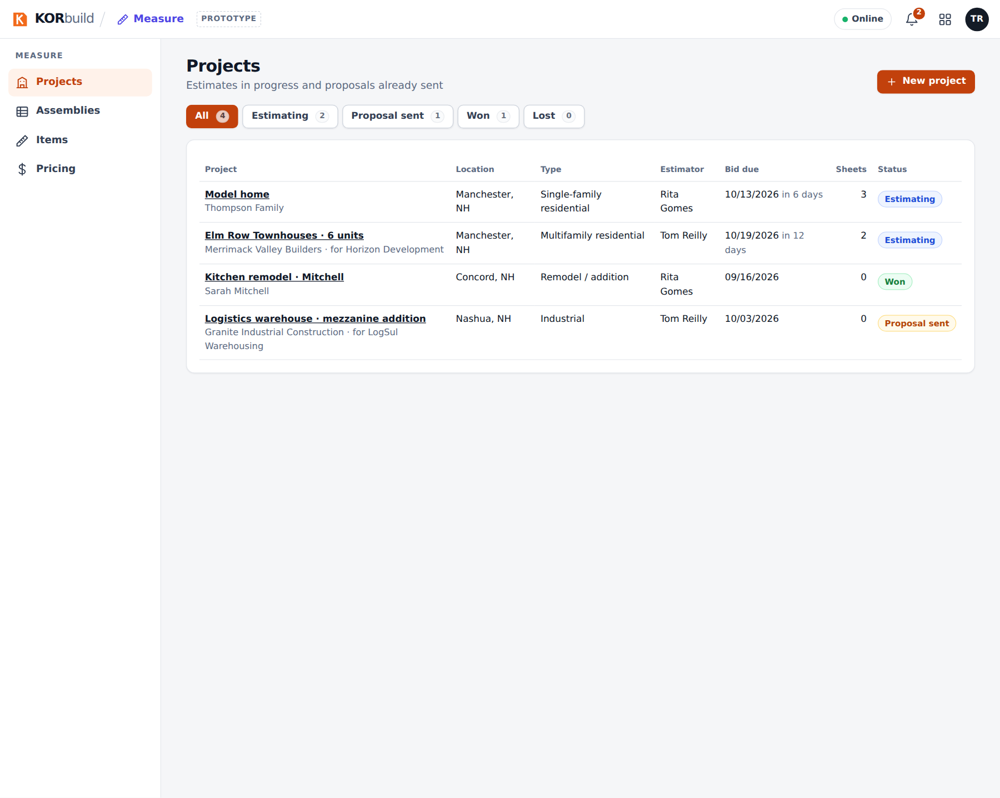
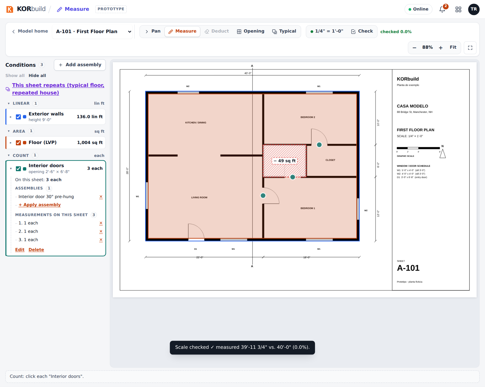

Measure Takeoff is plan takeoff for trade contractors: open the PDF plans in the browser, set the scale, measure walls, floors, siding, windows and doors with the mouse, and KORbuild turns the measurements into materials and labor hours through assemblies. From there it builds the material list for supplier quotes and the proposal for the client.
Measure Takeoff is for the people who estimate: they open the plans, measure and issue the proposal that goes to the client.
Why it matters
- Feet and inches, the way estimators work. Every length is shown as
12'-6 1/2"and every area in sq ft; you can type dimensions the same way. Behind the scenes, KORbuild keeps exact numbers, so zoom and screen size never change a measurement. - Measure Takeoff once, get everything. A wall measured once produces studs, plates, sheathing, house wrap, insulation, drywall and the carpenter hours. Count one more window and the sheathing, drywall and siding already account for it.
- Every number can be explained. Each material shows the math behind it: which condition, which formula, the waste % and the rounding. No hidden numbers.
- From takeoff to proposal in the same place. Quantities become a supplier quote list (without prices) and a proposal priced from your catalog and your markups.
Who uses it
| Who | Where | What they do |
|---|---|---|
| Estimator (admin, project manager) | Computer | Creates projects, uploads plans, measures, reviews materials and hours, sends quote requests, builds and issues proposals. |
| Owner / admin | Computer | Also maintains the catalog: items, assemblies with formulas, prices and markups. |
| Supplier | Receives the material list for quotes (no prices, no labor) and replies with prices. Not a user. | |
| Client (general contractor or owner) | Email / PDF | Receives the proposal. Not a user. |
Measuring needs a mouse and a large screen: Measure Takeoff is used on a computer.
The main screens
| Screen | What it shows |
|---|---|
| Projects | Every estimate with client, location, type, estimator, bid due date (with alerts) and status: Estimating, Proposal sent, Won, Lost. |
| Project | The project data, the sheets (with scale status), the quantities per condition, the typicals and the materials and labor. Links to the material list and the proposal. |
| Sheet (viewer) | The plan full screen, the conditions on the left, the toolbar (Pan, Measure Takeoff, Deduct, Opening, Typical, scale, zoom). |
| Items | The catalog of what you buy or pay for, in purchase units, with cost code. |
| Assemblies | Groups of items with formulas, applied to what you measure. |
| Pricing | The current cost of each item with effective dates, and the markups (overhead and profit). |
| Material list for quotes | Materials per supplier, in purchase units, ready to email. |
| Proposal | One line per cost code, priced from the catalog and markups, issued as a numbered PDF. |


How a takeoff moves
| Step | What happens |
|---|---|
| 1. Project | Create it with client, location and bid due date. |
| 2. Plans | Upload the PDF: each page becomes a sheet. |
| 3. Scale | Pick the scale from the list (or calibrate from a dimension) and check it on another dimension. |
| 4. Add assemblies | Choose what you will measure on this sheet (exterior walls, flooring, siding, windows…). |
| 5. Measure Takeoff | Click on the plan: lines, areas, counts. Deduct openings and cut-outs. |
| 6. Materials and labor | Calculated from the assemblies, with the math visible. |
| 7. Quotes | Send each supplier its list; enter the prices they send back. |
| 8. Proposal | Priced line by line; issue it, numbered and frozen; the project becomes Proposal sent. |
| 9. Won | The project is closed as won (or lost). |